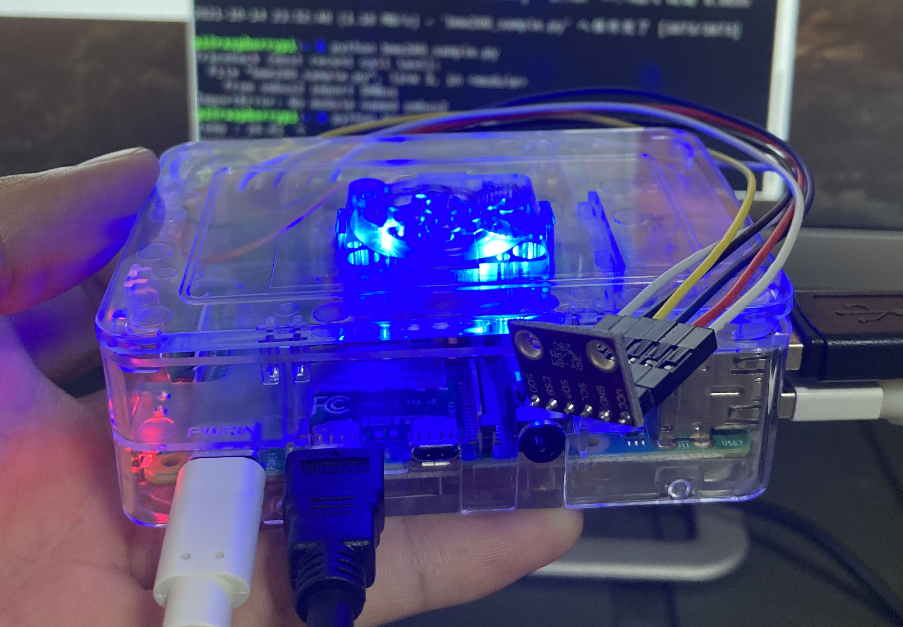

aboutこの作品について
Raspberry Pi4にBME280センサーモジュールを接続し、温度・湿度・気圧を測定します。
Pi側のPythonのプログラムから、HTTP通信のPOSTメソッドを使って、JSONデータをWEBサーバーへ送信します。

WEBサーバー側にはMySQLで作ったデータベースを用意しておきデータを格納します。
そしてJavaScriptでチーズの保存環境に適した温湿度かどうかを判定し、ブラウザに結果を表示させています。
測定とデータ送信は、1時間ごとのcronを回しているので、定期的にチーズの保存環境を把握できます。
course
未経験からでもスタートができるよう，カリキュラムは多くの専門家や
現役チーズ職人のアドバイスのもと，作られました．

本格的な農園を使った実地研修
チーズアカデミーでは，本格的な農園を使った実地研修を
行うことができます．プロとして活躍するチーズ職人も
使用するような，広大で環境も整った農園を余すところ
なく使い，卒業時には本格的なチーズを自分の力で作れる
実践力の養成を目指します．

必要な知識もしっかりと取得
チーズ作りには，しっかりとした食に関する知識が
欠かせません．チーズアカデミーでは，一流講師陣による，
チーズ作りに必要ないろはを余すところなく学べます．
チーズそのものでなく，栄養学全般を学ぶことも
可能ですので，チーズ以外への展開も夢ではないでしょう．

卒業制作はティスティング審査あり
チーズアカデミーでは最後の2ヶ月間で卒業制作を実施．
卒業制作として，チーズ作りを実際に行います．卒業後，
一般参加によるティスティング審査があるため，作り手の
目線だけでなく，消費者の目線から，卒業制作作品としての
チーズを，しっかりと評価いただくことができます．

access会社情報
- 学校名
- チーズアカデミーFUKUOKA
- 事務所所在地
- 〒810-0041
福岡県福岡市中央区大名1丁目3-41 プリオ大名ビル1F
- tel
- 000-000-0000
- fax
- 999-999-9999
contact説明会お申し込み・お問い合わせ
ぜひ1度，足を運んでみませんか．説明会は随時開催中．
その他，お問い合わせもお気軽にどうぞ．お待ちしております．
※チーズアカデミーは実際には存在しません．
間違っても問い合わせしないようお願いいたします．